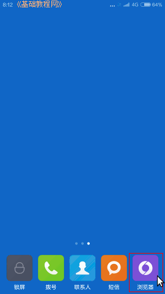
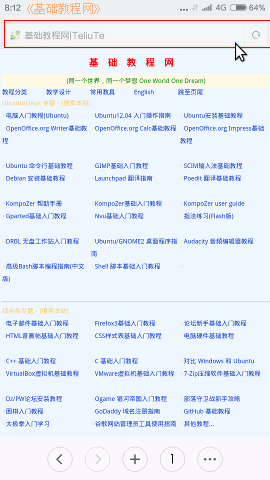
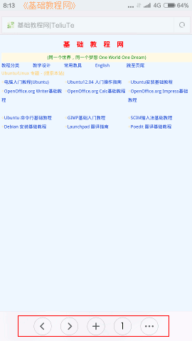
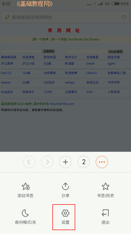
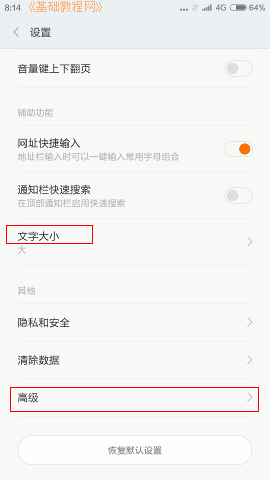
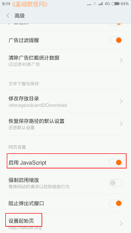

小米4手机操作指南玩家手册
作者：TeliuTe 来源：基础教程网
三、上网 返回目录 下一课开通流量或者连接wifi后，就可以上网浏览网页，手指在屏幕上双击可以放大页面，两个指头捏合可以缩小页面，两指张开可以放大页面；
1、浏览器
1）在屏幕右下角有一个上网的浏览器按钮，点击可以打开浏览器；

2）打开的是默认空白页，在上边的地址栏输入网站点右侧的转到按钮，可以打开相应的网站；

3）页面下边有一排工具按钮，左边两个是前进后退，加号是添加新浏览窗口，数字是切换窗口，三个点是更多选项；

4）点按三个点的更多选项，出来选项按钮，可以切换夜间模式，添加书签，退出程序，设置浏览器等；

5）点“设置”，进入设置页面，可以设置字体大小，清除浏览历史，清除缓存等；

6）继续点“高级”，可以设置关闭javascript，设置起始页浏览器首页；

本节学习了上网浏览的基础知识，如果你成功地完成了练习，请继续学习下一课内容；
本教程由86团学校TeliuTe制作|著作权所有
基础教程网：http://teliute.org/
美丽的校园……
转载和引用本站内容，请保留作者和本站链接。